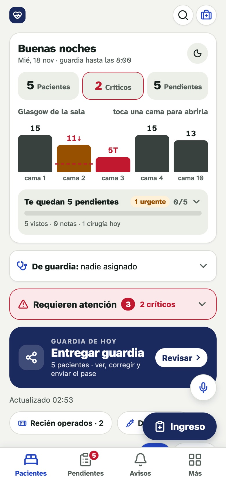
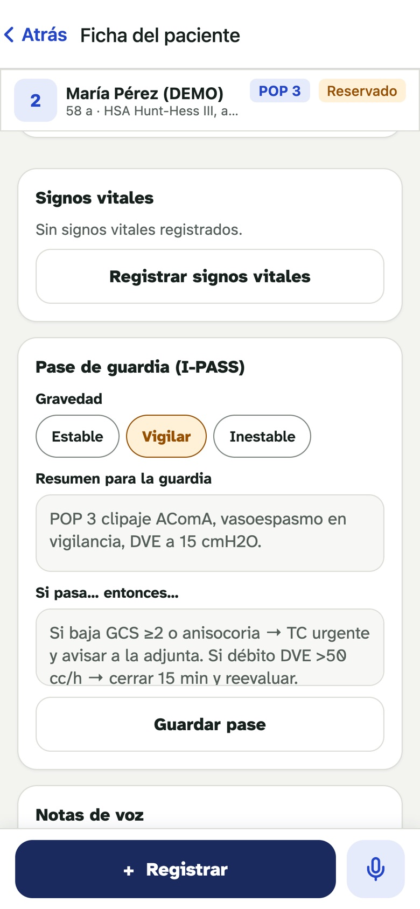

Voice dictation
You speak and the note is written and organized.
The patient census, the shift handover and the pending tasks of every hospital department, on your phone. The whole team sees the same thing, up to date.
I'll show it to you working, with test patients.


One place. The whole team. The whole shift.
Today the shift is handed over from memory, with scraps of paper and messages lost among hundreds of chats. What matters about each patient ends up scattered across every doctor's phone.
Scraps of paper, loose messages and handover from memory. RelevoMed puts it in order so the whole team sees the same thing.

A real walkthrough of RelevoMed, with test patients.
This is the main screen when a patient gets worse. It's a demo with test patients: there is no real data.
Ward Glasgow Tap a bed
↓ Dropped: monitor
You read each patient’s handover and confirm with “I received the shift”.
You enter it on your phone with the bed and diagnosis, and it shows up in everyone's list.
Bed 2's Glasgow drops from 14 to 11. The patient turns red and moves up to “Needs attention”.
You speak and the note is written and organized in the file.
You review everyone's handover, correct it if needed and send it to the incoming team.
Example with a test patient.
What a department really needs, with no extra screens.
You speak and the note is written and organized.
You keep working without signal; it syncs with the team when you're back online.
Who has it and whether it's urgent. Mark as done by swiping.
Progress notes, orders, discharge summary and medical record as PDF or Word.
Who is on call today and the month's rota.
Another department asks for an opinion and the answer stays in the file.
Security isn't an extra: it's on every screen.
Password plus a 6-digit code, and the app opens with your fingerprint.
A department doesn't see another's patients, except for an open consult.
We don't sell data or use it for advertising.
It records what the team orders. It doesn't calculate doses or suggest treatments.
No new equipment: the team's phones are enough.
On WhatsApp, with your department and hospital.
Working, with test patients, and we see what your department needs.
Each doctor logs in with their own account and the census is ready for the shift.
Loading the brain…
3D model adapted from Z-Anatomy, the free anatomy atlas (CC BY-SA 4.0), based on BodyParts3D, © The Database Center for Life Science.
Not to work. What you write is saved on the phone and shared with the team when the signal returns.
On Android, as an app, and on any phone or computer from the browser, including iPhone.
Yes. RelevoMed is for the whole hospital: the census, shift handover, pending tasks and consults work for any department. Since it was born in neurosurgery, it also includes neurological tools, such as Glasgow by components. Message me and we'll see what yours needs.
Only your department’s staff, with their account. Another department only sees a patient if there is an open consult.
No. RelevoMed records what the doctor orders; clinical decisions always belong to the team.
Message me and I'll show it to you working with test patients.
WhatsApp contact will be available very soon.